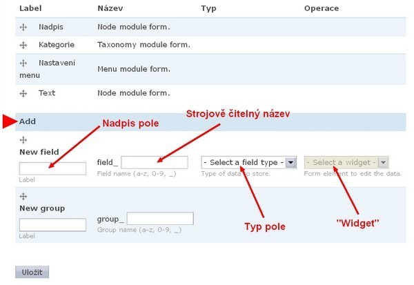

Jak začít - Content Construction Kit (CCK)
Snažíte se přizpůsobit typy obsahu vašim potřebám… a zjišťujete, že „nadpis“ a „text“ je trochu málo? Proto je tu modul Content construction kit – CCK.
Několik poznámek na úvod
- Následující text se vztahuje k Drupalu 6 (řada základních principů se dá odvodit i pro Drupal 5, jinak odkazuji na starší články na Drupal.cz nebo na knihu Jan Polzer: Drupal – Podrobný průvodce tvorbou a správou webů).
- Níže uvedený postup vychází z verze modulu CCK 6.x-2.0-rc10 a modulu Link verze 6.x-2.5. Pokud máte jinou verzi (především u CCK), můžete mít trochu jiné administrační rozhraní (nicméně, logika je pořád stejná).
- Kurzívou jsou v textu zvýrazněny volby/texty, které se mají zadat v administračním rozhraní.
CCK – více (různých) polí do (různých) typů obsahu
Když nainstalujete Drupal, získáte automaticky 2 typy obsahu: „stránku“ a „článek“. Sami si můžete přidat další. Nové typy obsahu sice můžete libovolně pojmenovat a odlišit například různými přístupovými právy, přiřazením k různým taxonomickým kategoriím apod., ale budou mít pořád podobnou strukturu jako článek nebo stránka. To vám časem asi nebude stačit, protože třeba ke článku byste chtěli přidat úvodník, k záznamu v katalogu byste potřebovali kolonku s odkazem na webové stránky a k plánované akci položku „kontakt“…
S pomocí modulu CCK lze přidávat další tzv. pole do všech typů obsahu. Jak do těch, které zahrnuje samotné jádro Drupalu (stránka, článek), tak i do všech vámi vytvořených, nebo do těch, které generují další moduly (Image, Event, Audio…).
Modul Content Construction Kit se instaluje obvyklým způsobem rozbalit-nahrát-zapnout. Po zapnutí byste ho však marně hledali v administračním menu – veškeré volby najdete u typů obsahu. Když se podíváte na jejich seznam (Administrace > Správa obsahu > Typy obsahu), uvidíte, že zde přibyly záložky Pole (Fields), Export a Import. Dvou posledních si teď nemusíte všímat (pro úplnost: slouží k vytvoření nového typu obsahu „kopírováním“ již existujícího). Nová záložka Fields je sice důležitá, ale prázdná (slouží jen pro nově definovaná pole – zatím je tam jen hláška o tom, že jste žádná pole nevytvořili). Podívejte se tedy do záložky Seznam, kde v tabulce u každého typu obsahu najdete novou volbu: manage fields.
Příklad textového pole: „Úvodník“
Dejme tomu, že chcete, aby na začátku každého článku přibylo nové pole nazvané Úvodník. Když v řádku Článek zvolíte manage fields, měli byste vidět přehled již existujících (výchozích) polí a pod ním formulář pro vytvoření nového pole. (Pozn.: pokud vidíte něco jiného, používáte nejspíš jinou verzi modulu. Každopádně je třeba, abyste se nějak dostali k volbě Add nebo Add field – Přidat pole).
Do formuláře zadáte: Label – Úvodník (nadpis pole), Name – uvodnik (strojově čitelný název), dále vyberte typ pole (bude se jednat o textové pole, takže Text), z další nabídky (widget) pak Text area (multiple rows). Zadáním skupiny (Group) se zatím nemusíte zabývat.
Uložte tyto volby a pokračujte na další formulář, kde zadáte další parametry. Rows je výška pole v řádcích, které chcete vytvořit – zadejte například 5 (pravděpodobně máte jako default). Dále můžete volitelně zadat Text nápovědy pro uživatele, který bude do vašeho nového pole (úvodník) zadávat text. Napište například: Krátký text, jehož účelem je uvést a upoutat pozornost na následující stať článku. Když rozbalíte Default value, můžete zadat výchozí hodnotu (v tomto případě nedává smysl, nechte prázdné).
Dále zvolte, jestli má být pole Povinné (musí mít každý článek úvodník?), Number of values (bude třeba více stejných polí? – v tomto případě ne, počet je tedy 1). Z možností Text processing vyberte, co považujete za vhodné (pozor ovšem na bezpečné nastavení vstupních formátů pro různé role, zejména v případě Full HTML); pokud si s tím zatím nevíte rady, ponechte plain text. Velmi užitečná je položka Maximum length, která dovoluje omezit délku textu (úvodník by neměl být příliš dlouhý). Naproti tomu povolené hodnoty (Allowed values) zde nedávají smysl, nechte prázdné a celý formulář odešlete (Save field settings).
Nyní opět uvidíte přehled všech polí (výchozích i přidaných), která u daného typu obsahu (článek) jsou. Pořadí polí v tabulce přitom odpovídá tomu, jak se budou zobrazovat při zadávání příspěvku i při jeho zobrazení uživateli (čtenáři). Je zřejmé, že bude nutné něco změnit, protože úvodník logicky nepatří na konec článku, ale pod nadpis (stačí v místě křížku přetáhnout myší na správné místo a hlavně nakonec Uložit).
Nyní si vytvořte pokusný článek, zadejte obsah do všech polí a odešlete. Ve výsledku byste měli vidět, že nově vytvořené pole (úvodník) funguje a zobrazuje se na správném místě. Nadpis „Úvodník:“ je tu však jaksi nadbytečný, což nepůsobí moc dobře. Vraťte se tedy na úpravu typu obsahu „článek“, a sice do záložky Display fields. Ve sloupci Label nastavíte, zda a kde se má zobrazit nadpis pole (v tomto případě ho nechceme vidět = hidden). Ve sloupci Teaser máte možnost určit, zda a jakou formou se má dané pole zobrazovat ve zkráceném náhledu, a v posledním sloupci (Full node) nastavíte totéž pro plné zobrazení daného typu obsahu (úvodník určitě budete chtít zobrazit v obou případech, takže nechte výchozí). Nezapomeňte Uložit a podívejte se na výsledek. V náhledu i v plném zobrazení článku byste měli vidět celý text úvodníku bez názvu pole.
Kdybyste se ale podívali, jak totéž vidí anonymní uživatel, patrně zjistíte, že nově přidaná pole nevidí vůbec. Je to tím, že Drupal 6 nově nabízí možnost (ale tím také nutnost) zadat oprávnění přístupu ke každému poli (týká se zobrazení i editace). Zadejte tedy oprávnění (uživatelé > oprávnění > Modul content_permissions) tak, jak je chcete mít (v daném případě zřejmě budete chtít, aby úvodník mohly zobrazit všechny role; oprávnění editace se nejspíš bude shodovat s oprávněním editovat typ obsahu „článek“).
Výsledku ovšem ještě něco chybí: úvodník má stejný vzhled jako vlastní text článku, což není ani přehledné, ani moc hezké. Vzhled nového pole můžete upravit v příslušném .css souboru (asi neuškodí zdůraznit, že správně je to ten, který se nachází ve složce sites/all/themes/vase_tema, takže si nově definované vlastnosti nepřemažete, až budete upgradovat na vyšší verzi Drupalu). V souboru, který se pravděpodobně jmenuje vase_tema.css, definujete požadované vlastnosti pro třídu nového pole (název třídy zjistíte například pomocí doplňku Firebug ve Firefoxu, ale můžete si ho i odvodit; v tomto případě se bude jmenovat field-field-uvodnik, obecně field-field-nazevpole).
V souboru vase_tema.css tedy definujete (například) větší a tučné písmo pro tuto třídu:
.field-field-uvodnik {font-size: 110%;
font-weight: bold;
}
… a zkontrolujete, že to funguje.
Příklad pole typu Node reference: „Související články“
Dalším užitečným vylepšením článku mohou být odkazy na související články na vašem webu. K tomu se hodí typ pole Node reference.
Postup:
Admin > Správa obsahu > Typy obsahu > ČlánekManage fields
Add
Label: Související články
New field : souvisejici_clanky
Field type : Node reference
Widget: Autocomplete Text Field
Uložit
Text nápovědy: Zadejte název souvisejícího článku
Content types that can be referenced: Článek
Advanced – Nodes that can be referenced (View): vynechat
Save field settings
Stejně jako v předchozím případě je třeba upravit Oprávnění a případně definovat vzhled nového pole a dále zkontrolovat/upravit nastavení v záložkách Manage fields a Display fields.
Manage fields: pořadí zřejmě není třeba měnit (Související články se zobrazí na konci).
Display fields:
Label: Above
Teaser: Hidden
Full node: Title (link)
(Výsledek: Nadpis pole se zobrazí nad jeho obsahem, v náhledu nebude dané pole zobrazeno a v plném zobrazení článku budou názvy zadaných souvisejících článků jako hypertextové odkazy).
Příklad pole typu Link: „Další informace“
Jako poslední příklad uvedu jeden z (mnoha) typů polí, který není součástí samotného modulu Content Construction Kit – CCK, ale musí se doinstalovat jako další modul z rodiny CCK. Jedná se o typ pole Link a stejnojmenný modul. Modul opět nahrajte do složky sites/all/modules a zapněte v administraci modulů.
Když nyní budete přidávat k typu obsahu Článek nové pole, objeví se nový typ automaticky v nabídce. Typ pole Link umožní přidat hypertextový odkaz směřující na jakoukoliv platnou URL. V případě článku to lze využít třeba v podobě pole „Další informace“, kde budou odkazy na webové stránky vztahující se k tématu.
Postup:
Admin > Správa obsahu > Typy obsahu > ČlánekManage fields
Add
Label: dalsi_informace
New field: Další informace
Field type: Link
Widget: Text Fields for Title and URL
Uložit
Text nápovědy: Zadejte název webu a URL (případně jen URL)
Number of values: Neomezené
Optional URL: Pokud zaškrtnete, je možné zadat i prostý text bez odkazu
Link Title: Optional (Odkaz na webové stránky bude možné zadat s názvem i bez něj. Samozřejmě můžete vyzkoušet i jiné varianty).
URL Display Cutoff: Zadejte, pokud si přejete zkrátit příliš dlouhé URL zadané bez názvu (docela praktická věc; link samozřejmě zůstane funkční).
Link Target: Zadejte, zda se má nová stránka otevřít v původním nebo novém okně, nebo zda necháte výběr na uživateli.
Rel Attribute: nejobvyklejší zadání „nofollow“ zabrání některým vyhledávacím robotům sledovat tento link.
Additional CSS Class: umožňuje přidat CSS třídu.
Save field settings
Opět je nutné nastavit ještě Oprávnění, pořadí polí (Manage fields) a zobrazení textu a nadpisu (Display fields).
Využití existujících polí
Jakmile jste pole jednou vytvořili, můžete ho znovu použít pro další typy obsahu. Budete-li nyní upravovat jakýkoliv jiný typ obsahu, pak v záložce Manage fields uvidíte možnost přidat nejen nové pole (New field), ale také už existující pole (Existing field).
Skupiny polí (Groups)
Nově vytvořená pole se u každého typu obsahu dají sdružovat do skupin (Groups). Může to být výhodné zejména tehdy, když máte polí hodně a potřebujete výstup nějak zpřehlednit (třeba odlišením vzhledu skupiny od ostatních polí). Na zkoušku si můžete vytvořit skupinu Info a zařadit do ní vytvořená pole Související články a Další informace (v záložce Manage fields je přetáhnete myší do nové skupiny, výsledek musíte Uložit). Nakonec musíte ještě v záložce Display fields nastavit, jak a kde se skupina polí (ne)má zobrazovat; nezapomeňte opět Uložit. Pak ve svém pokusném článku zadejte obsah do všech polí a podívejte se na výsledek.
---
Existuje mnoho dalších typů polí, která spolu s různými možnostmi nastavení poskytují obrovskou flexibilitu. Přehled modulů vztahujících se k CCK najdete na adrese http://drupal.org/…/category/88. Pro pohodlné vyhledávání modulů vyhovujících vašim potřebám lze vřele doporučit také stránky www.drupalmodules.com.
Eva Rázgová
| Příloha | Velikost |
|---|---|
| Add_field.jpg | 38.15 KB |

{kind=link}
Užitečný článek, který
Užitečný článek, který usnadní cestu mnoha začátečníkům. Jen tak dál.
Doporučil bych přílohu Add_field.jpg skrýt odškrtnutím pole Seznam v seznamu příloh na editačním formuláři článku.
Paradny clanok, velmi mi
Paradny clanok, velmi mi pomohol aby som sa zorientoval v cck, diky
CCK a úvodník
Mám otázku k příkladu o úvodníku. A co když chci na hlavní stránce zobrazovat pouze úvodník ( námi vytvořené pole ) a pole text ( které nejde editovat ) až po klepnutí na odkaz ke konkrétnímu článku? Díky za radu.
Napíšu co mě k tomu
Napíšu co mě k tomu napadá, určitě to nebude vyčerpávající:
(1)Asi nejjednodušší způsob (a zároveň nejplastičtější ani ne tak z hlediska Drupalu, ale řekněme publicistiky) je použít tlačítko „Oddělit upoutávku pod kurzorem“ (v D6); analogicky v D5 se vloží:
Když dáte „oddělení“ hned na začátku pole Textu, veškerý text vám „spadne“ do toho, co se ukazuje až v plném zobrazení. Je to výhodné z toho důvodu, že se můžete rozhodnout individuálně pro jednotlivé příspěvky (časem se třeba ukáže, že máte taky „kraťásky“, kde úvodník nechcete, ale přesto nechcete v náhledu pouze nadpis… Na druhou stranu je to nutné u každého příspěvku zvlášť nastavit (a pokaždé na to myslet).
(2)Jinou možností je zobrazovat články (samozřejmě i jiné typy obsahu) jako vlastní views, kde nebudete pracovat s náhledem, ale s jednotlivými poli (a pak tam můžete pole Text bez problémů vynechat).
(3)…A možná by bylo i řešení přes modul Content Templates (http://drupal.org/…/contemplate), ale to po pravdě řečeno jen hádám, nemám vyzkoušeno.
Číslo 1 není moc
Číslo 1 není moc efektivní. Pisatel by musel pokaždé myslet na to, že má hned na začátek vrazit . Číslo 2 – pokud to jinak nepůjde, bude se muset použít Views – ale raději bych bez Views. A k číslu 3, nějak se mi to nepodařilo rozchodit, pořád to na výpisu vyhazuje obsah.
Ještě jedna možnost
ad 1) oddělení upoutávky – zálěží na tom, jestli chcete mít maximálně standardizovaný výstup, nebo flexibilitu při vytváření obsahu. Každé má svoje pro a proti a domnívala jsem se, že jsem to taky v tom duchu napsala
ad 2) vlastní views – pro web s již existujícícm obsahem mi to připadá opravdu nejjednodušší možnost, ale pokud někdo přijde na něco lepšího, sem s tím :-)
ad 3) Content Templates – sorry, nevím
…4) pro web, kde ještě není obsah (nebo pro nové typy obsahu) to můžete obejít jen pomocí CCK: V editaci typu obsahu zrušíte pole „Text“, pomocí CCK si pak vytvoříte vlastní pole, kam se bude vkládat „tělo“ článku, a samozřejmě budete mít pole „Úvodník“, event. cokoliv dalšího. V „display fields“ u CCK pak nastavíte, že „úvodník“ se má zobrazovat v teaseru, ale „tělo“ ne. Samozřejmě to nelze použít na už existující uzly, kde původní pole „Text“ už má nějaký obsah.
Views
Bude i nějaký tutorial „Jak začít“ pro Views? CCK se velmi šiklo.
Bude…
Bude…
Gratulace
Emo, díky, že pro nás stále meleš maso. Jinak bychom s Drupalem tápaly jak hluchej ve tmě.
Díky, díky, díky.
Ahoj, jsem úplnej Dupalskej začátečník, ale Drupal se mi moc zalíbil a vzhledem k lidem, kteří ochotně radí takovým jako jsem já, se mi líbí čím dál tím víc. Pracuji s ním jen týden, co jsem zjistil, že existuje, a skoro jsem se zamiloval. Už v něm mám celkem pokročilé stránky, ale na můj vkus jsou dost „prasácké“. Předělám, vyčistím, uvidím… Každopádně tenhle článek mi moc pomohl při jejich tvorbě. Takže DÍKY.
Vhodnost CCK
Ahoj.
Jsem začátečník, proto prosím o shovívavost. Chci se zeptat zkušených, zda by Drupal obecně a potažmo modul CCK byl vhodný na aplikaci s následujícími vlastnostmi.
Katalog výrobků. Nechci to jako eshop. Prostě mám dejme tomu 300 výrobků, u kterých chci sledovat mnoho a mnoho parametrů (polí). Pochopil-li jsem správně, tak pomocí CCK bych si založil nový druh stránky, kde bych definoval všechny ty pole/parametry. A poté, až bych chtěl zadat nový výrobek „do databáze“, tak vlastně vytvořím novou stránku nad tínto typem obsahu, je to tak?
Děkuji za info.
Petr Vavřinec
Ano, přesně tak
Ano, přesně tak… jedině snad: neříkejme tomu „nová stránka“, ale uzel, a „nový typ stránky“, ale nový typ obsahu (v Drupalu).
Polepším se...
…v názvosloví, slibuji :-)
Děkuji za rychlý answer..
A chápu správně, že zřejmě vznikne někde v databázi Drupalu nová tabulka, která obsahuje ta data? Znamená to tedy, že nemusím ručně zakládat nové uzly, ale prostě je „naleju“ do databáze a tím pádem budu mít kompletní obsah?
Petr V.
Jestli to tam chcete soukat
Jestli to tam chcete soukat hromadně přes databázi, tak to chce pořádně promyslet (a samozřejmě dělat na webu, který je odstavený z provozu, zazálohovaný … a záloha je otestovaná, že funguje).
Vytvořte si nový typ obsahu, 2–3 nové uzly a podívejte se do databáze, co se tam děje.
Jestli se nepletu (kdyžtak mě někdo prosím opravte), týká se to minimálně 3 tabulek: node, node_revisions a pak tabulky specifické pro nový typ obsahu, kde je obsah CCK polí: ta se jmenuje contet_type_[strojovynazevtypuobsahu]
jeste jsem se tomu nevenoval
jeste jsem se tomu nevenoval poradne kdy a za jakych podminek(a ze uz se na to chystam dlouho) ale vim urcite ze jsou moznosti contet_type_[strojovynazevtypuobsahu] ale taky content_field_[strojovynazevfieldu] – mam podezreni ze je to podle poctu typu obsahu kam je field „pridelany“ (modul content copy)
rozhodne bych radsi volil vytvoreni jednoducheho skriptu ktery zavola node_save($object)
„nalejvat primo do DB“ silne
„nalejvat primo do DB“ silne nedoporucuju! existuji snad nejaky moduly na import ale nemam konkretni zkusenost.
Nalejvání
Hmmm, tak to si raději udělám v databázi svoje vlastní tabulky s jiným prefixem a napíšu si funkci, která mi ten obsah vypíše na stránku. Akorát teď tedy musím zjistit, jak tu funkci volat, aniž bych musel modifikovat původní PHP skript pro vypsání node. Napadlo mně vytvořit si nový typ obsahu (vlastně prázdný) a změnit pak ten skript, který bude volat tenhle typ obsahu (resp. nody pomocí něho vytvořené). Ale myslím si, že to nepůjde, protože ten skript pro volání bude stejně zřejmě jen jeden a podle nějakého parametru pozná, co volá :-(
No, ještě se zamyslím. Nechtělo se mi psát kompletně celou omáčku kolem toho, proto jsem chtěl použít všemocný Drupal. Je otázka, zda není pro mně rychlejší si to napsat celé sám, než si pomáhat přes Drupal. Přece jen je to jako jít s kanónem na vrabce.
A ako si to chcel „nalievat“
A ako si to chcel „nalievat“ do databazy? Predpokladam cez nejaky PHP skript co cita data odniekial a vklada do databazy. Ked zvladnes toto tak zvladnes aj jednoduchy skript ktory bude citat a nalievat data do drupalovskej databazy a korektne – cize cez Drupal funkcie. Tu je na tu temu obsiahle vlakno http://drupal.org/node/178506 a tu strucnejsie http://www.appnovation.com/…lds-drupal-6
Nalévání...
…bych udělal v PHP MySQLadminu přes SQL příkazy, čili klasicky Importem. Popřípadě konverzí z tabulky a importem, který má tohle rozhraní v sobě.
nice